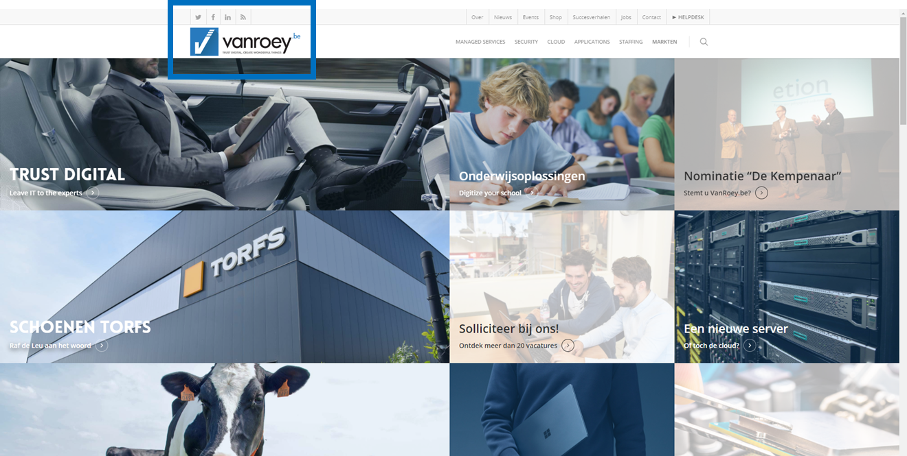

-
labelOverzicht
Het maken van de giptaken verliep vrij vlot. Ik maakte het grootste deel al tijdens de stage, of de week erna. Zo zat alle info nog vers in mijn geheugen. Natuurlijk hadden we tussendoor nog andere taken en testen, waardoor ik me soms een beetje moest haasten omdat ik de deadlines pas enkele dagen op voorhand zag staan.
Voor de giptaken van Frans heb ik mijn taalknop helemaal omgedraaid. Ook voor Engels zal ik dat nog moeten doen, de giptaak voor dat vak zal ik in Februari moeten afgeven. Ik zal die dan ook met plezier toevoegen aan deze website.
Over het algemeen waren al mijn giptaken tijdig af, en ik heb ze met veel passie in deze gipwebsite geplaatst zodat u kan genieten van mijn harde werk. Veel leesplezier! -
label_outlineReportage photo du stage
Photo 1)
Sur cette photo vous voyez le bus que j’ai pris pour aller à VanRoey.be pour la première fois.
C’était un bus rapide parce que je suis arrivé 20 minutes en avance, ce n’est pas l’habitude de De Lijn!
Photo 2)
Voici une capture d’écran au sujet de mon trajet à VanRoey.be.
Heureusement, ce voyage de Brecht à Turnhout n’a jamais duré plus d’une heure.
Photo 3)

La première vue sur mon entreprise de stage m’a rendu nerveux parce que je me demandais si mes collègues seraient sympa.
La grandeur de l’entreprise me rend excité, je n’avais pas prévu que la firme est énorme!
Photo 4)
Chaque papier rose représente un appareil qui doit être réparé.
Mes chers collègues ont beaucoup de travail aujourd’hui, ça veut dire que je dois faire plus d’attention!
Photo 5)
Dans cette armoire il y a les commutateurs de VanRoey.be, vous pouvez voir qu’il y a trop de câbles!
Pour des raisons de sécurité, je n’ai pas reçu de droits pour photographier des serveurs.
Photo 6)

Est-ce que vous avez déjà vu un smartphone en pièces séparées?
Le travail de ce collègue était à couper le souffle, il peut casser l’écran ou autre chose en un instant!
Photo 7)
A midi, j’ai pris un selfie comme preuve que j’étais là, à VanRoey.be!
Il y a beaucoup de lumière afin qu’il ne fasse jamais trop sombre pour réparer des appareils.
Photo 8)
Voilà mon bureau avec mon ordinateur portable dont j’avais souvent besoin.
Sous mon bureau vous voyez des ordinateurs cassés, mais on peut utiliser les éléments qui fonctionnent pour réparer un autre ordinateur.
Photo 9)

Aujourd’hui, c’est mon premier jour au département des salariés qui aident de grandes firmes.
Mes collègues m’ont fait faire connaissance avec des programmes qu’ils utilisent tous les jours.
Photo 10)

Et voilà l’arrêt de bus où j’attends le bus pour la dernière fois, mon stage est fini!
Merci à mes collègues, c’était une semaine inoubliable!
Je vous remercie, et au revoir! -
label_outlineAnalyse huisstijl
Introductie
Hieronder zal u eerst info vinden, gevolgd door bijlagen die deze info staven.
Na de huisstijl van VanRoey.be te hebben bestudeerd, ben ik tot de conclusie gekomen dat ze een vrij sobere maar zeer duidelijke stijl hanteren. Ook gebruiken ze de kleur van hun logo verder in andere items, bijvoorbeeld in een document. Ik heb de volgende legende gemaakt om de aanduidingen op de bijlagen duidelijker te maken:
: VanRoey.be
 : Webstore.be
: Webstore.be
Alles wat met blauw aangeduid is, is ofwel het logo van VanRoey.be ofwel een item dat afgeleid is van het logo. Idem voor de rode kleur, maar danvoor Webstore.be (de Commerciële tak van VanRoey.be). Deze ga ik hier niet verder bespreken aangezien ik mijn stage over VanRoey.be heb gedaan. Het enkele dat ik erover kan en wil vertellen is dat de rode kleur er is in navolging van Mediamarkt, VandenBorre enzovoort, deze hebben ook allemaal de rode kleur in hun logo. Ik heb items die naar Webstore.be puur voor de duidelijkheid ook even aangeduid.
Logo VanRoey.be:
Kleur
U merkt op dat de ".be" dezelfde kleur blauw heeft als het vinkje aan het begin van het logo.
Die blauwe kleur wordt ook in andere elementen en documenten verwerkt.
De reden hiervoor is dat het een speciale pantone kleur is, waarvan men weet dat het makkelijk / standaard te produceren is. Dit is vooral ook heel handig wanneer de nieuwe wagens laten bestickeren, nieuwe vlaggen laat drukken, enzovoort. Men weet op deze manier zeker dat de kleur altijd juist is (denk aan de RGB-waarden).
Dit blauw is ook frisser en moderner dan de vorige kleur, deze was net iets donkerder blauw in combinatie met beige (de vorige huisstijl had een volledig gekleurde band bovenaan de pagina: een blauw vlak met het logo er in met daarnaast een beige balk met de titel in) maar dit was alles behalve print/milieuvriendelijk. De beslissing om blauw te gebruiken komt van de zaakvoerder want, naar zijn mening (en ook naar de mijne), is en blijft blauw een zakelijke en frisse kleur!
Tekst
Een tekst heeft natuurlijk een bepaald lettertype, ook hier is dat het geval.
In het logo zelf wordt het lettertype “HP Futura” gebruikt. De reden hiervoor was omdat HP dit lettertype ook in al haar communicaties en campagnes gebruikt. Aangezien VanRoey.be een partner is van HP, mochten ze dit lettertype gratis gebruiken. Een mooi voordeel was dan ook dat hun reclame (voor o.a. HP toestellen) mooi overeenkwam met de geprefabriceerde campagnes van HP.
Buiten het logo wordt er een ander lettertype gebruikt: Segoe UI, het meest standaard lettertype in Windows 8.1 t/m Windows 10. Dit maakt dat het een van de uitgebreidste lettertypes ter wereld is (alle mogelijke karakters worden ondersteund, het bevat ook honderden moderne iconen die je kan gebruiken in documenten) en dat het geoptimaliseerd is voor leesbaarheid op zowel het scherm als papier. Ook heeft iedereen dit lettertype standaard geïnstalleerd staan op zijn / haar computer, dat maakt dat je niet voor verrassingen komt te staan wanneer je dit lettertype gebruikt in een PowerPoint die je nadien op een andere computer (bv. Schoolcomputer) wil voorstellen. Het kan namelijk zijn dat je lettertypes gebruikt die je zelf hebt geïnstalleerd, maar die niet op de schoolcomputers staan.
Naamsverandering
Wanneer U het logo opnieuw bekijkt, merkt u het achtervoegsel “.be” op. Vroeger was “VanRoey.be” nog “Van Roey Automation”. Nadien hebben ze er “Van Roey automation” van gemaakt. Omdat er een opmars was van bedrijven die hun domeinnaam als bedrijfsnaam gebruikten, wilden ze er “VanRoey.pro” van maken, alleen, na onderzoek bleek niemand spontaan .pro in zijn browser te tikken, dus hebben ze er “.be” van gemaakt.
Natuurlijk wordt het logo zo wel langer, en wordt het blauwe vakje aan de linkerzijde kleiner ten opzichte van het logo. Daarom hebben ze ervoor gekozen om “.be” rechtsboven in het klein te plaatsen. Het is ook blauw gekleurd zodat het wat meer zou opvallen.
Websites zijn nu belangrijker dan ooit. Daarom wil je dat klanten je website snel en gemakkelijk kunnen vinden, vandaar dat ze de url in hun logo hebben verwerkt. Op deze manier blijft de nadruk natuurlijk ook op “VanRoey” liggen.
Veranderingen van het logo
Het blauwe vakje links van het logo van VanRoey.be heeft ook al veranderingen doorgaan. Sinds het vorige logo was het de bedoeling om de ‘V’ in een soort APP—icoon te verwerken. Hieruit kwam eerst het ontwerp met Glossy iOS:

Wat nadien is veranderd naar hun huidige vorm met een Flat design:
U merkt het verschil wel, de glans is veranderd naar een schaduw. Dit logo ziet er (naar mijn mening) ook net iets stijlvoller uit.
Op de volgende afbeeldingen vindt u enkele voorbeelden van de huisstijl.
Afgewerkt ticket
Voorblad onthaalbrochure:
Eerste pagina onthaalbrochure:
Website:

-
label_outlineCase study
1) Ticketingsysteem: Microsoft Dynamics Navision
Microsoft Navision is het programma dat VanRoey.be gebruikt als Ticketingsysteem. Tickets worden handmatig aangemaakt met input die verkregen wordt:
- aan de servicedesk
- via e-mail / telefoon
- via de website
- via een online portal
Werking: vanuit het standpunt van een klant (particulier)
- Ga naar de winkel.
- Leg uw probleem duidelijk uit, dit kan de medewerkers een hoop werk schelen. Dit beïnvloedt dus ook de tijd dat u uw toestel kwijt bent.
Het aanmaken van een ticket
Werking: vanuit het standpunt van een klant (bedrijf) Surf naar de website van VanRoey.be.
- Geef je vraag / probleem in.
- Volg je vraag, kijk wie eraan werkt, wat ze ermee doen en welke oplossingen er gevonden worden.
OF
- Bel naar VanRoey.be. - Leg uw probleem duidelijk uit, dit kan de medewerkers een hoop werk schelen, waardoor uw probleem sneller opgelost kan zijn.
Werking: vanuit het standpunt van een medewerker
In het geval van het online portal:
- Bijna niets! Het ticket wordt automatisch gemaakt, met alle gegevens en extra info die de klant zelf meegaf. De klant moet zelf aangeven welk soort probleem het is zodat het ticket meteen naar de juiste afdeling gestuurd wordt.
- Moest het ticket naar de verkeerde afdeling gaan, kunnen zij dit gewoon doorsturen naar de juiste afdeling.
- Nu moeten de andere medewerkers het probleem alleen nog oplossen...
In het geval van een oproep:
- Eerst maak je een nieuw ticket aan en selecteer je de klant (maak een nieuwe klant aan indien nodig).
- Luister aandachtig naar wat de klant te vertellen heeft.
- Vervolgens selecteer je het soort incident: Major Incident - Incident - Request Fulfilment.
- Vervolgens selecteer je een prioriteit: Zeer hoog - Hoog - Normaal - Laag.
- Hierna worden de gegevens van de gebruiker zelf (en apart ook die van de bedrijfsleider of dergelijke) genoteerd, samen met de gegevens van het toestel dat is binnengebracht of een gedetailleerde beschrijving van het probleem dat zich voordoet.
- Er kunnen opmerkingen geplaatst worden (bijvoorbeeld een mogelijke oplossing die je al weet, of extra info wanneer je deze vraag nog al eens voorbij zag komen).
- Stuur dit ticket door naar de juiste persoon of afdeling, zodat zij er meteen aan kunnen beginnen.
Het opslaan van het ticket
- Elk ticket wordt opgeslagen in een SQL-database achter MS NAV.
- Elke afdeling heeft zijn eigen tickets. Zo zullen er bijna nooit hardwareproblemen bij de software-engineers komen, of andersom.
- De tickets krijgen een status: NEW.
Het verwerken van een ticket
- Wanneer een medewerker aan een ticket begint, kan hij dit ticket met één muisklik aan zijn persoonlijke tickets toevoegen. Vanaf dan kan iedereen van je afdeling zien dat jij met het ticket bezig bent. De status van het ticket zal ook van ‘NEW’ naar ‘IN PROGRESS’.
- Wanneer er een mogelijke oplossing is wordt dat als commentaar gezet.
- Wanneer het probleem opgelost is of het toestel gemaakt is, worden alle uitgevoerde handelingen beschreven als commentaar. Deze commentaren worden ook opgeslagen in de database, zodat je er later terug heen kan gaan om te kijken hoe je dat probleem had opgelost. Zo moet je niet elke keer van nul een oplossing zoeken en bespaar je tijd.
- Wanneer je echt zeker bent dat alles opgelost is of het toestel voldoende getest is en als gerepareerd beschouwd wordt, kan het ticket gesloten worden. Het aantal tickets dat je behandeld hebt wordt per maand bijgehouden, en met het sluiten van dit ticket zal dat saldo met één verhogen. De status van het ticket wordt gewijzigd in ‘CLOSED’ zodat iedereen van de afdeling kan zien dat het ticket klaar is.
Enkele opmerkingen:
- In de meeste gevallen krijgen medewerkers een bonus bovenop hun loon als ze bepaalde aantallen tickets verwerken. Dit moedigt aan om harder en efficiënter te werken. Het loont natuurlijk niet om vals te spelen...
- Sommige klanten kopen een SLA-contract. Hier bestaan twee versies: één van 1uur en één van 4uur. Dit wil zeggen dat wanneer een klant met een probleem dit contract heeft, VanRoey.be binnen de bijhorende tijd moet reageren op het probleem, anders zullen zij een boete moeten betalen. De SLA-contracthouders worden dus sneller geholpen dan klanten zonder dit contract, maar betalen daar ook wel flink voor.
- Sommige klanten kopen een Service-contract. Dit houd in dat de klanten 24/24 en 7/7 geholpen moeten worden door VanRoey.be, dus ook in weekends en vakanties. Hiervoor worden er techniekers stand-by gehouden, dit werkt via een beurtrolsysteem.
Extra:
- VanRoey.be is momenteel aan het kijken naar een ander systeem waar ik de naam niet van mag weten, maar met dat programma zouden er veel tickets volautomatisch kunnen worden aangemaakt, en zo zouden er ook screenshots mee opgeslagen kunnen worden (wat tot nu toe niet mogelijk was).
- Ik heb nog even een screenshot gevraagd aan mijn begeleider zodat jullie toch een idee hebben over hoe NAV eruitziet. Dit is de menu-pagina:
2) Op locatie zoeken naar een probleem
Natuurlijk kan er niet voor elk probleem een ticket gemaakt worden. Sommige problemen moeten bij de klant zelf opgelost worden, bijvoorbeeld een server die plots uitvalt of een internetverbinding die niet werkt. Ook health-checks van een server moeten op verplaatsing gebeuren. Hier een kort overzicht dat ik van mijn begeleider kreeg, aangepast aan het probleem en de omstandigheden van op dat moment.
- Bij het binnenkomen kan je best eerst enkele vragen stellen om zoveel mogelijk info over het probleem te weten te komen. Zo kan je bijvoorbeeld eerst vragen of er kabels verstoken of veranderd zijn vlak voor het probleem plaatsvond (door kabels zomaar te veranderen kan je een loop creëren waardoor het hele netwerk plat gaat).
- Eens in de IT-ruimte of serverafdeling beginnen we altijd met de hardware na te kijken. Wanneer het probleem niet meteen duidelijk is, zal je softwarematig een antwoord moeten zoeken.
- Kijk eerst eens of alle apparaten wel opstaan. Als de server uit staat, weet je al dat het probleem daar kan zitten. Kijk ook zeker eens of de lichtjes van de switchen flikkeren, of dat er niet al te veel losse kabels zijn. Kijk ook eens snel of alle apparaten wel stroom krijgen.
- Sluit je laptop aan op het en probeer een IP-adres te krijgen van de DNS. Wanneer dit niet lukt, moet je extra documentatie gaan zoeken (usernames, passwords, tekening van het netwerk...) over het netwerk van de locatie en zoeken waar de fout zit.
- Indien dit een volledig nieuwe klant is en er dus geen documentatie te vinden is, zal je moeten back-tracen: de bron van het probleem zoeken. Best geef je je laptop nu een vast IP-adres zodat je verbinding met het internet hebt.
- Nu moet je weer even je ogen gebruiken: Kijk nog eens even naar alle toestellen en controleer of ze zeker allemaal werken. - Hierna ga je de server even checken.- Allereerst start je de server handmatig op (indien deze af zou staan). Als er een scherm bij hoort kan je daarmee werken, anders (zoals in ons geval) via Remote Desktop. Geef de naam of het IP-adres van de server in, gevolgd door een gebruikersnaam en een paswoord.
- Als de server afgesloten of uitgevallen was, krijg je een ERROR-melding waarbij je moet ingeven waarom de server net afgesloten of uitgevallen was (in dit geval: Power failure: UPS fail).- Verander nu je vast IP-adres terug naar een automatisch IP-adres. Als de DNS werkt zal de server nu zelf een IP-adres aan de laptop geven (zoals het hoort, anders zal je nog even verder moeten zoeken!).
- Hierna kan je enkele clients testen: pinautomaat, computer aan de balie ...
- Als alles werkt kan het bezoek afgerond worden: bij een nieuwe klant wordt er plaatselijk een bon gemaakt, afgedrukt en getekend.
- Bestaande klanten hebben een contract. Ze kopen “werkuren” van VanRoey.be en de gewerkte uren van die dag worden gewoon van het totaal aantal resterende werkuren afgetrokken. -
label_outlineBedrijfseconomische analyse
VanRoey.be heeft 4 vestigingen, in Turnhout (Stwg op Antwerpen 101, 2300 Turnhout), in Geel (Antwerpseweg 166H, 2440 Geel), in Mechelen (Blarenberglaan 6, 2800 Mechelen) en in Schoten (Bredabaan 1026, 2900 Schoten). Ikzelf heb mijn stage gedaan in hun vestiging te Turnhout. Voor meer info kan u altijd terecht op hun website: https://www.vanroey.be/ . Daar kan u ook alle publiciteit en promoties, en zelfs nieuws en tips bekijken. Ook is het mogelijk om aankopen te doen via deze site. Dit is een grote hulp om hun doelgroep te bereiken, veel mensen zoeken op het internet naar een oplossing van hun probleem en komen daardoor op de website terecht. Een tweede manier om naamsbekendheid te bevorderen is mond-tot-mond-reclame.
De vestiging in Turnhout heeft heel wat kleine concurrenten zoals PC VISION, Pcshop bvba, Switch, Gamegear.be, crsTurnhout, PC2000 vzw… Er zijn namelijk een hele hoop computerwinkels in de omgeving Turnhout. Maar als groot bedrijf heeft VanRoey.be daar wat op gevonden. Ze hebben daarom hun eerste vestiging aan een drukbezocht kruispunt aan de ring van Turnhout geplaatst. Zo zien elke dag duizenden mensen hun bedrijf en dat bevorderd mond-tot-mond-reclame. Dat is zowel belangrijk bij particuliere klanten als bij bedrijven!
Zoals bij de meeste computerzaken is de doelgroep erg gevarieerd. Zowel oudere mensen als jongere mensen komen bij VanRoey.be computers of computer accessoires kopen. Daarom hebben ze ook een uitgebreid assortiment. Dat is vooral diep, maar ook breed wanneer we over computergerelateerde producten spreken. Zo verkopen ze bijvoorbeeld een 20-tal verschillende schermen, 10-tal verschillende toetsenborden, 25 verschillende muizen bestaande uit drie categorieën: 10 met draad, 5 draadloos via bluetooth zonder adapter, 10 draadloos via bluetooth met adapter. In alle producten hebben ze een oudere, simpele versie voor ouderen, maar ook een lichtgevende, gedecoreerde versie voor jonge gam(st)ers.
Dit bedrijf is vooral een handelsonderneming aangezien het veel verkoopt, maar ook is het een dienstverlenende onderneming doordat het veel services aanbiedt aan hun klanten zoals het controleren en onderhouden van hun servers. Aangezien zij alleen maar afgewerkte producten verkopen behoren ze ot de tertiaire sector. De producten die ze verkopen, kopen ze uiteraard aan bij een leverancier, maar wegens privacy-redenen konden ze mij daar verder geen info over geven. Over klanten ben ik wel een paar dingen te weten gekomen, zo wordt de winkel TORFS bij hen vaak als voorbeeld gebruikt bij uitleg en dergelijke, aangezien dat een van hun grootste klanten is. VanRoey.be beheerd bijvoorbeeld servers en netwerken binnen TORFS. Er zijn ook andere klanten aan bod gekomen tijdens mijn stage, maar ik geef om privacy-redenen geen specifieke namen. Wel kan ik zeggen vat VanRoey.be zowel particuliere klanten als bedrijfsklanten heeft.
Mijn onderneming telt ongeveer 150 werknemers over al hun vestigingen, heeft een jaaromzet van 25.795.363 euro en een balanstotaal van 9.288.708 euro. Alle drie de waarden overschrijden de drempel om een groot bedrijf genoemd te worden dus is het een bedrijf van de categorie “groot”.
De slogan van VanRoey.be gaat als volgt: “We are the Trusted Guide to your digital journey, so you can create wonderful things”, hun missie is zeer mooi verwerkt in de volgende tekst:
VanRoey.be gelooft dat de groei van een bedrijf of organisatie best ook een digitaal luik heeft. Business, strategie en ICT kunnen niet zonder elkaar. Dankzij ITC is het voor uw klanten en relaties veel eenvoudiger om zaken te doen met u. Uw medewerkers gaan aan de slag met gebruiksvriendelijke tools die hun werkplezier en efficiëntie verhogen, maar achterliggend is er een complexe omgeving met een complex beheer. Dat is de IT paradox. Cruciaal is dus om je te laten begeleiden door een betrouwbare gids op deze digitale reis. Wij bieden klanten een veilige keuze voor de toekomst zodat ICT een strategisch instrument wordt dat onze klanten helpt hun doelstellingen te bereiken.
VanRoey.be probeert haar klanten op allerlei manieren te helpen. Dit lukt het beste door zelf flexibel te zijn wat verkoop betreft. Zo verkopen ze hun producten zowel via een online webstore als in hun eigen winkels. Ook hun diensten zijn verkrijgbaar bij bedrijfsklanten thuis als in de winkels zelf. Vaak kan VanRoey.be ook via de telefoon of via e-mail al belangrijke informatie doorgeven waardoor soms het probleem van de klant meteen opgelost wordt. -
label_outlineVideo about me
A brandnew video about me will be available in just a few weeks. Stay tuned!